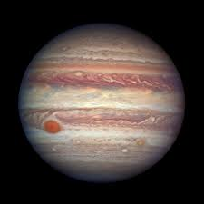
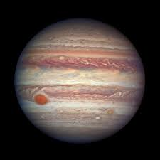

A galaxy is a system of stars, stellar remnants, interstellar gas, ust, dark matter, bound togetherOur Sun is one of at least 100 billion stars in the Milky Way, a spiral galaxy about 100,000 light-years across. And where are we in the Milky Way? Our Sun lies near a small, partial arm called the Orion Arm, or Orion Spur, located between the Sagittarius and Perseus arms.
The Latest
The Next Full Moon is the Wolf or Ice Moon
The stars are arranged in a pinwheel pattern with four major arms, and we live in one of them,
about two-thirds of the way outward from the center. Most of the stars in our galaxy are thought to host their own families of planets.
The Milky Way galaxy is just one of the billions of galaxies in the universe.
The universe is a vast expanse of space that contains all of everything in existence. The universe contains all of the galaxies, stars, and planets. The exact size of the universe is unknown. Scientists believe the universe is still expanding outward
d by gravity. The word is derived from the Greek galaxias, literally 'milky', a reference to the Milky Way galaxy that contains the Solar System.
.jpg)
.jpg)
.jpg)
.jpg)
.jpg)
.jpg) 
